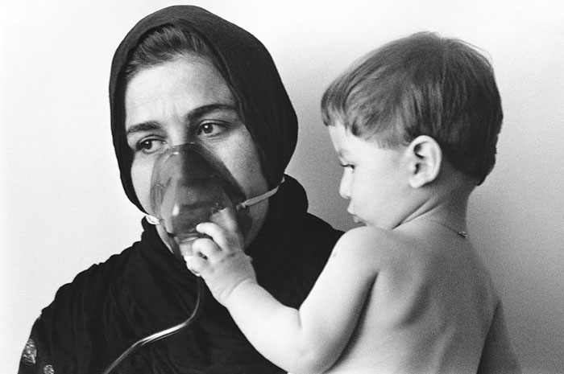
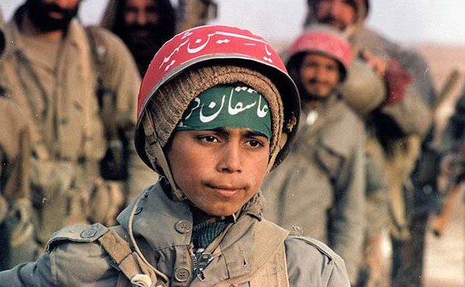

پذيرش > سایت نوشته ها > به مناسبت 29 می؛روز جهانی حمایت از صلح: صلح، رویایی که به آن دست نیافتیم


 به مناسبت 29 می؛روز جهانی حمایت از صلح: صلح، رویایی که به آن دست نیافتیم به مناسبت 29 می؛روز جهانی حمایت از صلح: صلح، رویایی که به آن دست نیافتیم
10 خرداد 1391 - زهره اسدپور - نسخه قابل چاپ
تا قانون خانواده برابر: تحریم های فزاینده علیه ایران و همگام با آن تهدیدات و جنگ رسانه ای که علیه ایران به راه افتاده است، نشانه های شومی هستند که نوید روزهای سخت تر از پیش را برای مردم ایران به همراه دارند. شباهت های روند تهدیدات اخیر با تهدیدات و تحریم هایی که منجر به حمله علیه عراق شد، بسیاری از کنشگران اجتماعی را به تکاپو برای ممانعت از فرجام نامیمون این تهدیدات که می تواند جنگی به مراتب خانمان سوز تر از جنگ 8 ساله باشد، واداشته است. در این میان به باور من تاکید بر «جنگی که نباید اجازه ی آغاز بیاید» ممکن است در خود معنایی تلویحی در شناسایی شرایط کنونی به عنوان شرایط صلحی تمام عیار داشته باشد. حال آن که واقعیت امر این است که ما در تمام چند دهه ی اخیر هرگز شاهد شرایط صلح تمام عیار در ایران نبوده ایم. آنچه که می تواند سرانجام محتوم افزایش تهدیدهای غرب علیه ایران باشد، تنها کشاندن دامنه ی جنگ به بخش هایی وسیع تر از ایران است. زیرا بسیاری از مناطق مرزی کشور بعد از جنگ ایران و عراق هرگز از شرایط جنگی خلاصی نیافته اند. علاوه بر آن گفتمان رسمی کشور و جهت گیری بودجه و گسترش نیروهای نظامی همه و همه دلالت بر نظامی گری ای دارد که بی وقفه در حال گسترش است و خود به تنهایی مانع برقراری شرایط صلح تمام عیار در کشور است. آن سوتر، باید اذعان داشت، تحریم های فزاینده نیز، نه تنها نشانه هایی تهدید آمیز از جنگی که می تواند در پیش باشد، است بلکه خود، جنگی است که قربانیان خاموش خود را از میان مردم عادی بر می گزیند.
از همه ی آن چه گفته شد می توان نتیجه گرفت، آن چه که می بایست هدف هر گونه حرکت صلح طلبانه ای باشد، نه تنها فقدان نبرد نظامی ای تمام عیار و رسمی که هر گونه «نظامی گری» ای است که در شرایطی که رسما جنگی در کار نیست، به زمینه سازی برای قلع و قمع مردم مشغول است.
گزارشی از یک سفر، زمینی بارور شده از مین
در مسیر سنندج- سقز، مردان بومی بسیاری برای فروش دوغ های محلی می ایستند. ما که برای خرید توقف کرده ایم، از فروشنده درباره ی مین های ضد نفر می پرسیم.... روستای مرد جایی در نزدیکی جاده است. مرد بی توجه به ناباوری ما، گویا که از واقعه ای عادی یاد می کند، از شش روستایی ای سخن می گوید که قربانی مین های ضد نفر شده اند. 6 نفر در روستایی کوچک بی دست و پا شده اند! شش نفر که بیشتر از پسرکان چوپانی بوده اند که گوسفندان را برای چرا به کوهستان برده بودند.
مقصد نهایی ما سردشت است، شهری مرزی و کرد نشین در استان آذربایجان غربی. با زنی که سرایدار مدرسه است به گفتگو می نشینیم و زن جوان از سال های جنگ می گوید که زیر بمباران سنگین دشمن در شهر مانده بودند. سردشت شهر کردنشین مرزی ایران، اولین قربانی بمباران شیمیایی بود. زن جوان از خانواده اش می گوید که چون کسی را در شهرهای دیگر نداشتند تا در ایام جنگ به او پناه برند ،لاجرم در سردشت مانده بودند.پدر ، مادر و 8 فرزند قد و نیم قد. مانده بودند زیر بمباران،خمپاره و گلوله ی تفنگ....زن به یاد می آورد زمانی را که دخترک کوچکی بود و مادر روسری را به دور دهان و بینی او می بست تا مبادا استنشاق باقی مانده ی گازهای سمی ناشی از بمباران شیمیایی شهر، مسمومش کند.... همان طور که پدر را مسموم کرده بود. هشت سال زیر بمباران! برای من که خاطراتم از آژیرهای قرمز و گلوله های ضدهوایی ها، خطوط غیر پیوسته ی کودکیم بود، غیر قابل تصور است.

عکس : مهدی منعم
پدر که مجروح شیمیایی بود پس از سال ها عذاب در اثر ضایعات و جراحات شیمیایی جان سپرده بود و زن غمگنانه می گوید که چند سالی است حتی به مزار پدر نیز نرفته است . اطراف گورستان پوشیده از مین های ضد نفر بود و چند نفر از اهالی در سال هایی که دیگر جنگی در کار نبود، قربانی این مین ها شده بودند. زن جوان از ترس اینکه خود نیز قربانی یکی از این مین ها شود سالها پا به گورستانی که مزار پدر در آن است،نگذاشته بود.
تلخ ترین بخش سفر به مناطق مرزی غرب و شمال غرب کشور، دیدار از مدارسی است که با پیام هایی غیر معمول پوشانده شده اند. بر خلاف تمام دنیا که دیوارهای مدارس پوشیده شده اند از تصاویر شاد و نشاط بخش با پیام هایی برای زندگی ای شاد تر و زیباتر، در بسیاری از مدارس مناطق مرزی غرب ایران دیوار ها پوشیده شده اند از هشدارهایی ترسناک برای همزیستی با مین های ضد نفر که اغلب از کودکان قربانی می گیرد. کودکان هر روز بارها تصویر هشدار آمیز کودکی بدون پا که قربانی مین شده است را می بینند تا به یاد داشته باشند که خطر هر جا می تواند در کمین آنها باشد، حتی در بازی های کودکانه شان.
بیش از 16 میلیون مین خنثی نشده در استان های مرزی ایران مدفون است. و طرفه آن که ایران – دومین کشور آلوده به مین های ضد نفر در جهان- به معاهدات ضد مین نپیوسته است! در چنین شرایطی طبیعتا گرچه بیش از دو دهه از پایان جنگ ایران و عراق می گذرد، اما نمی توان از وجود صلح در بسیاری از مناطق ایران به خصوص مناطق مرزی کشور سخن گفت.
نه تنها وجود مین های ضد نفر که هر روزه جان هزاران نفر از مرزنشینان را به خطر می اندازد، بلکه درگیری های گاه و بیگاه با گروه های شبه نظامی مخالف و شرایط امنیتی حاصل از از این تهدیدات، در بسیاری از مناطق ایران جایی برای سخن گفتن از« صلحی که موجود است» باقی نمی گذارد. بلوچستان، اهواز، کردستان و کرمانشاه از استان هایی هستند که قربانی این درگیری های مسلحانه گاه و بیگاه شده اند.
«نه» به نظامی گری
نگاهی کوتاه به تاریخ معاصر ایران موید این نظر است که ساختن دوتایی «جنگ و صلح» به عنوان دو موقعیت که لاجرم در فقدان یکدیگر معنا می یابند درست نیست. زیرا دقیقا در زمانی که جنگ به معنای رسمی آن در میان نیست، نه تنها در برخی موارد درگیری های مسلحانه ی خونباری رخ می دهد بلکه به طور متوسط هر روز مین های ضد نفر از میان غیر نظامیان قربانی می گیرند. همچنین در سطحی وسیع تر گفتمان رسمی بر تقدیس جنگ پای می فشارد. یکی از نمونه های این پای فشاری بر تقدیس جنگ، اسطوره سازی از کودکانی است که بر خلاف کنوانسیون های بین المللی در جنگ ایران و عراق به خط مقدم فرستاده و مظلومانه کشته شده اند. تصاویر مظلومانه ی این کودکان که حق مسلم «کودکی کردن» از آنان زایل شده و به قربانگاه فرستاده شده اند همچنان نمادهایی برای برانگیختن احساسات ملی،میهنی و دینی است.

نمونه های فراوانی از این نظامی گری در دوره ی صلح وجود دارد که نمی بایست در کوشش های صلح طلبانه به وادی فراموشی سپرده شوند. بر این اساس بهتر است از «میلیتاریسم» و نظامی گری به جای جنگ و شرایط جنگی سخن گفت. میلیتاریسمی که مانع پیوستن به معاهداتی چون معاهدات ضد مین و یا دیگر معاهدات بشردوستانه می شود. میلیتاریسمی که جهت گیری بودجه را تعیین می کند، میلیتاریسمی که«حق مسلم» را از تامین مایحتاج زندگی روزانه به سرمایه گذاری بر انرژی ای سوق می دهد که نه تنها دشمن محیط زیست و هزینه بر است، بلکه ایران را آماج حملات و تهدیداتی گاه همه جانبه کرده است.
ارسال به
بالاترین
،
توییتر
،
فریندفید
،
فیسبوک
در همين بخش :
 یک خبر تلخ؟ یک قانونشکنی؟ یک تصمیم بخشنامهای جدید؟ یک خبر تلخ؟ یک قانونشکنی؟ یک تصمیم بخشنامهای جدید؟
چرا بایست به سکسوالیته پرداخت؟ / نفیسه آزاد
آزارجنسی خانگی؛ «قربانی» نه، «نجات یافته»
زنان، بزرگترین بازندگان بهار عرب
سانسور از دیدگاه جنسیتی/الهه امانی
ديگر بخش ها :
طرح یک میلیون امضا
|
مقالات
|
سایت نوشته ها
|
اخبار
|
گزارش كمپين
|
گفت و گو
|
علیه سکوت
|
كوچه به كوچه
|
نامه های شما
|
گزارش ویژه
|
گفتگو با اعضا
|
ویژه سالگرد کمپین
|
تصویر برابری
|
دل آرام علی
|
تریبون
|
مقالات
|
تاریخ شفاهی
|
خارج از چارچوب
|
کتابخانه
|
درباره کمپین
|
کمپین در شهرها
|
کمپین در بند
|
صدای تغییر
|
ویژه 22 خرداد
|
لایحه حمایت از خانواده
|
گالری
|
عشا مومنی
|
امیر یعقوبعلی
|
خدیجه مقدم
|
راحله عسگری زاده و نسیم خسروی
|
پروین اردلان،جلوه جواهری، مریم حسین خواه، ناهید کشاورز
|
زینب پیغمبرزاده
|
سعیده امین، سارا ایمانیان، محبوبه حسین زاده، ناهید کشاورز و همایون نامی
|
احترام شادفر
|
نسیم سرابندی زاده،فاطمه دهدشتی
|
وبلاگ مهمان
|
پرونده خرم آباد
|
دستگیری ها
|
مریم مالک
|
پرستو اللهیاری
|
مهرنوش اعتمادی
|
سمیه رشیدی
|
Other Languages
|
همراهان
|
«فراخوان کمپین ده روز با بهاره هدایت»
| English
|